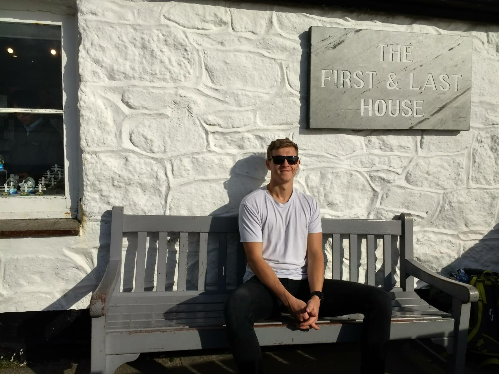

Hi I'm Dan Goss
Short bio of me
Why I'm applying to Founders & Coders
To Learn
To Collaborate and Co-operate
To Share
Infosecurity and data privacy
Festival workshops
The Glass Room
Union organising
IWW and the Castle
London Renters' Union
Environmental activism
Fossil Free campaigning, divestment and People & Planet
Fuel Poverty Action